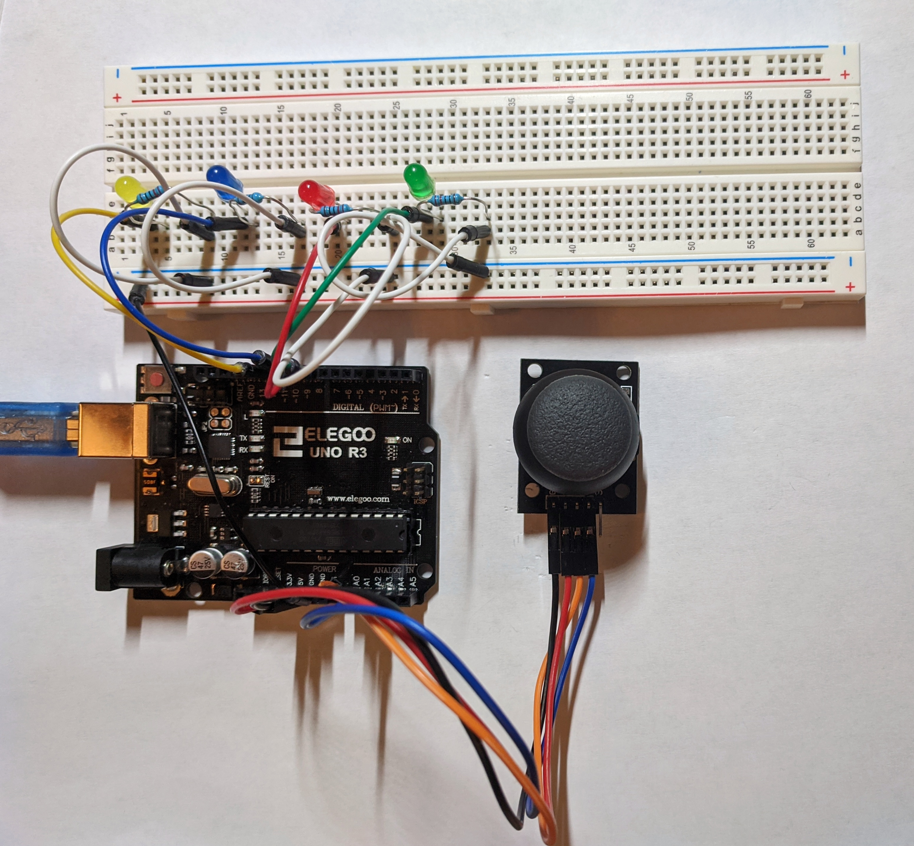
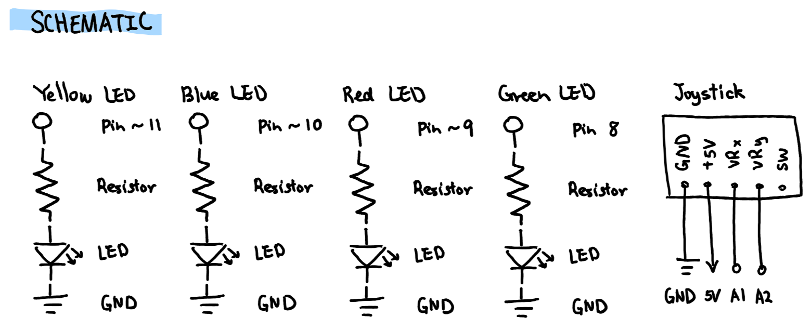
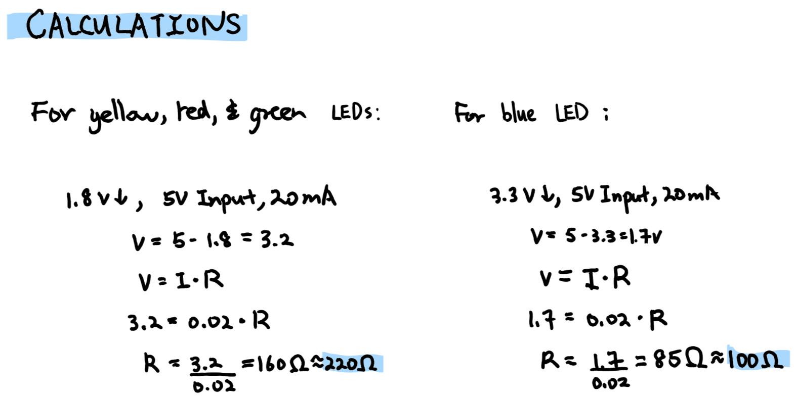

Amanda's Assignment 6!
Here is all the documentation for assignment 6!

This is the Arduino circuit. It consists of yellow, blue, red, and green LEDs and a Analog Joystick.

This is the system in action. The smiley face on screen moves in the corresponding direction of the joystick's movement. By pressing the 'y', 'b', 'r', and 'g' keys on the keyboards, the background of the screen changes to yellow, blue, pink, and green, respectively. The LEDs also light up according to the colour of the background. By pressing the 'w' key on the keyboard, the background reverts to the default white and all LEDs are turned off.


These are the schematic and calculations.
For the yellow, red, and green LEDs, any resistor higher than 160 ohms could be used. I decided to use a
220 ohms resistor. For the blue LED, any resistor higher than 85 ohms could be used. I decided to use a 100
ohms resistor.
// function called when file starts
void setup() {
// initiates Serial Monitor at 9600 baud
Serial.begin(9600);
// set the timeout for parseInt
Serial.setTimeout(10);
// loops pin initiation for outputs
for (int pin = 11; pin > 7; pin--){
// assigns pins for outputs
// yellow, blue, red, and green
pinMode(pin, OUTPUT);
}
}
// function executed after setup; repeatedly
void loop() {
// creates variable for x position of joystick
// read from A1 pin
int xPosition = analogRead(A1);
// creates variable for y position of joystick
// read from A2 pin
int yPosition = analogRead(A2);
// prints open square bracket to Serial Monitor
Serial.print("[");
// prints x position to Serial
Serial.print(xPosition);
// prints comma to separate x and y values
Serial.print(",");
// prints y position to Serial Monitor
Serial.print(yPosition);
// prints close bracket to Serial Monitor
Serial.println("]");
// if there is serial data
if (Serial.available() > 0) {
// reads data and store it in varibale inByte
int inByte = Serial.read();
// for trouble shooting
// print inByte
Serial.print("inByte:");
// followed by inByte value
Serial.println(inByte);
// if ASCII value is character 'y'
if (inByte == 121) {
// turns yellow LED on
digitalWrite(11, HIGH);
// turns blue LED off
digitalWrite(10, LOW);
// turns red LED off
digitalWrite(9, LOW);
// turns green LED off
digitalWrite(8, LOW);
// if ASCII value is character 'b'
} else if (inByte == 98) {
// turns blue yellow LED on
digitalWrite(10, HIGH);
// turns red LED off
digitalWrite(9, LOW);
// turns green LED off
digitalWrite(8, LOW);
// turns yellow LED off
digitalWrite(11, LOW);
// if ASCII value is character 'r'
} else if (inByte == 114) {
// turns red LED on
digitalWrite(9, HIGH);
// turns green LED off
digitalWrite(8, LOW);
// turns red LED off
digitalWrite(11, LOW);
// turns blue LED off
digitalWrite(10, LOW);
// if ASCII value is character 'g'
} else if (inByte == 103) {
// turns green LED on
digitalWrite(8, HIGH);
// turns yellow LED off
digitalWrite(11, LOW);
// turns blue LED off
digitalWrite(10, LOW);
// turns red LED off
digitalWrite(9, LOW);
// if ASCII value is character 'w'
} else if (inByte == 119) {
// from yellow to blue to red to green
for (int pin = 11; pin > 7; pin--){
// turns all LEDs off
pinMode(pin, LOW);
}
}
}
}
This is the code snippet for the Arduino. It takes x and y positions of the joystick and outputs them to the Serial Monitor. It also turns the corresponding LED on depending on the keyboard key pressed ('y' = yellow, 'b' = blue, 'r' = pink, 'g' = green). If keyboard key 'w; is pressed, it turns all the LEDs off.
// this code is based off of the following source
// https://github.com/machineagency/hcde439/blob/master/p5-examples-and-addons/hcde439-example2/sketch.js
// it employs the p5 client-side library
// https://p5js.org/reference
// variable to hold an instance of the serialport library
var serial;
//rename to the name of your port
var portName = 'COM3'
// variable for data coming in over serial
var dataarray = [];
// HEX code value for background colour
let value = "#FFFFF";
// sets up the program
function setup() {
// make a new instance of the serialport library
serial = new p5.SerialPort();
// set a callback function for the serialport list event
serial.on('list', printList);
// callback for connecting to the server
serial.on('connected', serverConnected);
// callback for the port opening
serial.on('open', portOpen);
// callback for when new data arrives
serial.on('data', serialEvent);
// callback for errors
serial.on('error', serialError);
// callback for the port closing
serial.on('close', portClose);
// list the serial ports
serial.list();
// open a serial port
serial.open(portName);
// creates a 1920 * 1080 canvas
createCanvas(1920, 1080);
}
// get the list of ports:
function printList(portList) {
// portList is an array of serial port names
for (var i = 0; i < portList.length; i++) {
// Display the list the console:
print(i + " " + portList[i]);
}
}
// for trouble shooting/status display; see if server is connected
function serverConnected() {
// prints if server is connected
print('connected to server.');
}
// for trouble shooting/status display; see if port is open
function portOpen() {
// prints if port is open
print('the serial port opened.')
}
// for trouble shooting/status display; see if serial port has error
function serialError(err) {
// prints error if existent
print('Something went wrong with the serial port. ' + err);
}
// for trouble shooting/status display; see if serial port is closed
function portClose() {
// prints if port is closed
print('The serial port closed.');
}
// reads data from serial and converts x and y position data
// into an array
function serialEvent() {
// executes if serial is sending data
if (serial.available()) {
// creates a variable for data read from serial
var datastring = serial.readLine();
// creates a variable for new array
var newarray;
// executes if no error
try {
// check to see if we can part through the data
// sets parsed data as newarray in JSON form
newarray = JSON.parse(datastring);
// executes if there is error
} catch(err) {
// prints error to console
console.log(err);
}
// if JSON data exists
if (typeof(newarray) == 'object') {
// set data array as the new array
dataarray = newarray;
}
// for trouble shooting, prints content of datastrings
console.log("position " + datastring);
}
}
// functions loops forever until program stops or noLoop() is called
function draw() {
// sets the background to the given value
background(value);
// sets the outline weight of the circle as four pixels
strokeWeight(4);
// sets the outline colour to black
stroke("#000000");
// creates circle at joystick's x and y position
// with a diameter of 100 pixels (face of smiley face)
circle(dataarray[0], dataarray[1], 100);
// sets fill to black
fill("#000000");
// creates a circle for the right eye of the smiley face
// at x position plus 20 pixels, y position, with
// diameter of 10 pixels
circle(dataarray[0]+20, dataarray[1], 10);
// sets fill to black
fill("#000000");
// creates a circle for the left eye of the smiley face
// at x position minus 20 pixels, y position, with
// diameter of 10 pixels
circle(dataarray[0]-20, dataarray[1], 10);
// change fill to honey yellow in HEX code
fill("#FFBE00");
// sets the outline weight of the circle as four pixels
strokeWeight(4);
// draws arc (mouth of the smiley face)
// at position x, position y plus 15 pixels
// with width and heigth of 40 pixels, starting
// at 0.5 radian and ending at 2.65 radians
arc(dataarray[0], dataarray[1]+15, 40, 40, 0.5, 2.65);
}
// executes everytime a key is pressed
function keyPressed() {
// if key pressed is 'y'
if (key === 'y') {
// for troubleshooting; writes following phrase to console
console.log("yellow key");
// writes the key value to serial; goes back to Arduino
serial.write(key);
// sets the background to pale yellow in HEX code
value = "#F8EC83";
// if key pressed is 'b'
} else if (key === 'b') {
// for troubleshooting; writes following phrase to console
console.log("blue key");
// writes the key value to serial; goes back to Arduino
serial.write(key);
// sets the background to pale blue in HEX code
value = "#A6DAEF";
// if key pressed is 'r'
} else if (key === 'r') {
// for troubleshooting; writes following phrase to console
console.log("red key");
// writes the key value to serial; goes back to Arduino
serial.write(key);
// sets the background to pink in HEX code
value = "#F982AC";
// if key pressed is 'g'
} else if (key === 'g') {
// for troubleshooting; writes following phrase to console
console.log("green key");
// writes the key value to serial; goes back to Arduino
serial.write(key);
// sets the background to pastel green in HEX code
value = "#8BCC78";
} else if (key == 'w') {
// for troubleshooting; writes following phrase to console
console.log("white key");
// writes the key value to serial; goes back to Arduino
serial.write(key);
// sets the background to white in HEX code
value = "#FFFFF";
}
// prevents any default behaviour
return false;
}
This is the code snippet for the web. It uses the p5 js library. It takes the values from Arduino's Serial Monitor and uses them to move a smiley face around the screen. Based on the key pressed on the keyboard, it changes the background of the website and send the pressed key data back to the Arduino through serial